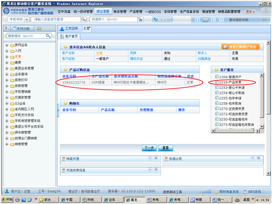
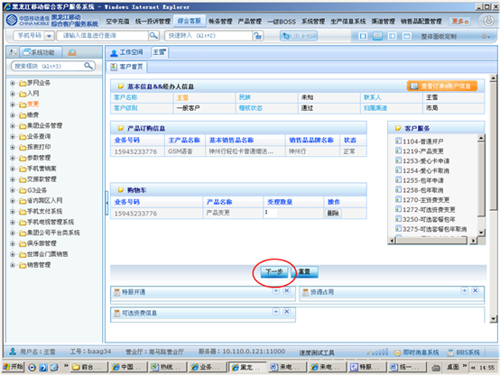
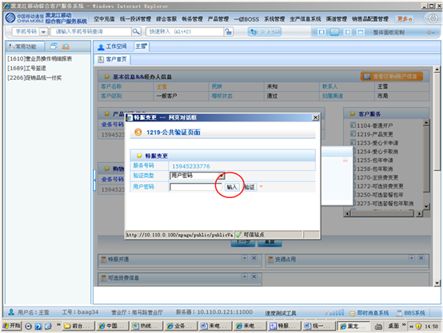
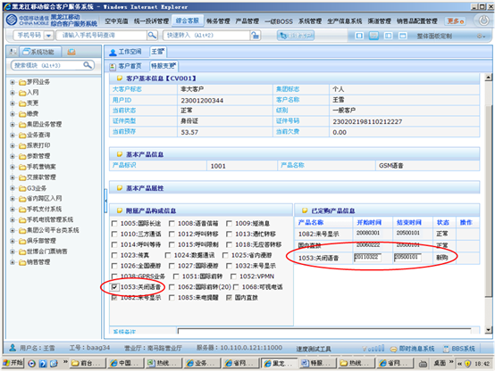
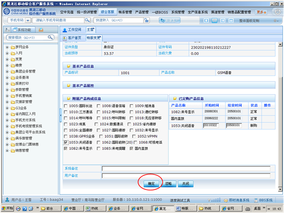
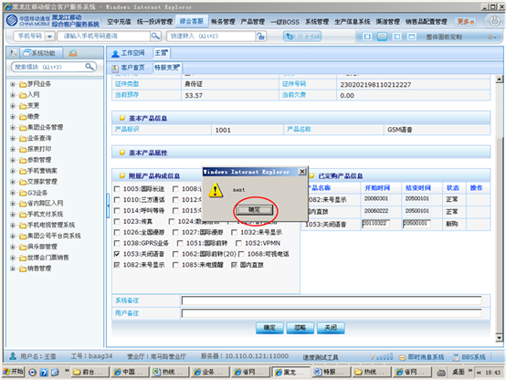
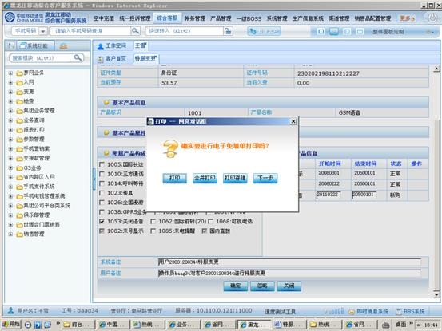

1、进入方式
在“请输入手机号码查询”处输入客户的手机号码，点击查询按钮，点击“产品订购信息”内显示的任意客户信息，在右侧“客户服务”栏点击“1219产品变更”。
2、界面形式及操作步骤说明
（1）在“请输入手机号码查询”处输入客户的手机号码，点击查询按钮，点击“产品订购信息”内显示的任意客户信息，在右侧“客户服务”栏点击“1219产品变更”。

（2）点击“下一步”。

（3）点击“输入”，由客户通过密码小键盘输入服务密码。

（4）在“附属产品构成信息”列表中将“关闭语音”点击上“√”，恢复语音功能时需将“关闭语音”业务前的“√”点击掉。（客户申请的“关闭语音”业务将在右侧“已定购产品信息”列表中显示，同时显示新购“关闭语音”的开始时间和结束时间）。

（5）点击“确定”。

（6）点击“确定”关闭操作提示。

（7）根据客户本次是否办理多个业务，点击“打印”或“合并打印”或“打印存储”。

（8）点击“确定”提交本次操作。